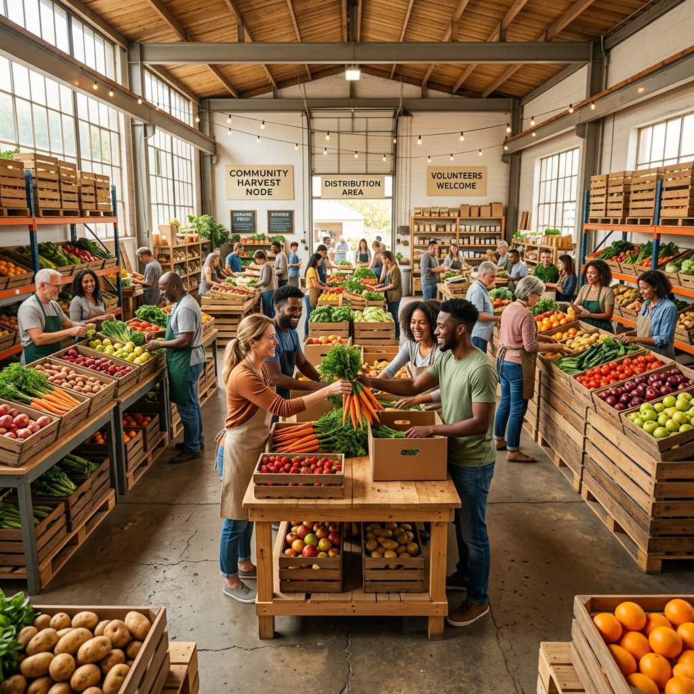

Vrde acompaña procesos de productores a nivel nacional. Desde el establecimiento Ovoro hasta las fincas de aceite agroecológico, generamos puentes transparentes donde el productor fija el precio justo y la tierra dicta los tiempos.

Los productores ingresan al ecosistema Vrde. Disponibilizamos nuestra propuesta organizativa en la gran red "En Conjunto" para sincronizarnos con los ritmos naturales y logÃsticos.
El pulso constante. Provee alimentos de primera necesidad a las comunidades y proyectos de reventa, asegurando un sostén cotidiano y fresco.
El gran acopio. Sincronizada con los ciclos de la luna, propone grandes volúmenes a costos más bajos. LogÃstica eficiente y mecanización sagrada.
Vrde genera puestos de trabajo inmediatos dentro de las comunidades. Espacios mutables donde se materializa la labor: recepción, conservación y armado de pedidos. Cada "Work slot" brinda certidumbre y nos conecta con la naturaleza de estar al servicio del otro.

Simula el impacto de participar en las compras comunitarias frente al mercado tradicional. SoberanÃa alimentaria con transparencia.
Elegà cómo querés integrarte a este ecosistema y ocupá tu lugar en la red.